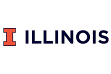

March 2025 – Present
Graduate Research Assistant - Full Stack Engineer
School of Information Sciences, UIUC - USA
Built a cross-platform Flutter app with AI-driven recommendations for 100+ users, improved engagement, and supported reliability through testing and CI/CD.